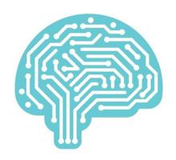
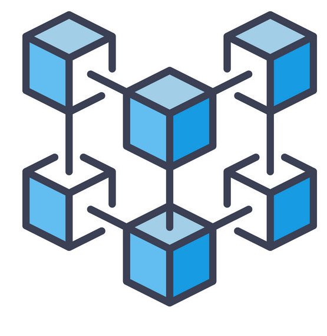
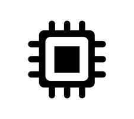
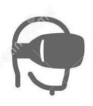
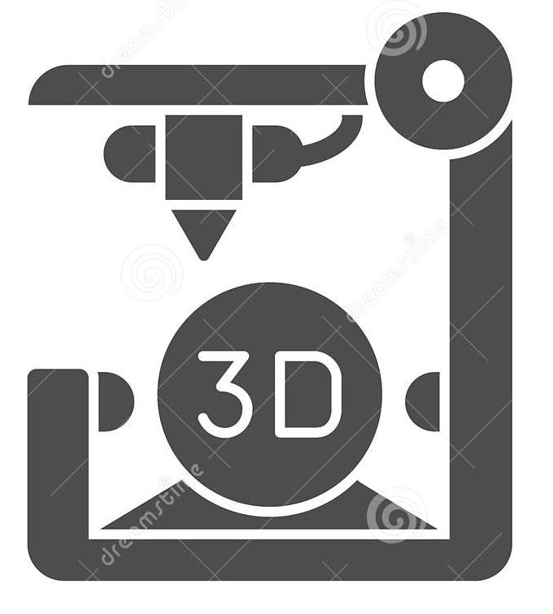

Rivoluzione 4.0
Tecnologie
Rivoluzione 4.0 e le altre
Futuro nel lavoro
Tecnologie della Rivoluzione 4.0
 Intelligenza artificiale (IA).
 Blockchain
 Computer Quantistici
 Realtà virtuale (VR)
Biotecnologie
Robotica
 Stampa 3D
IoT
Cloud